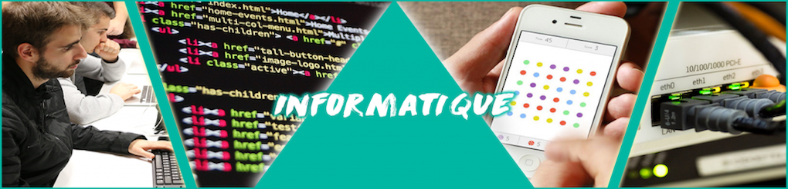

Départements informatiques

IUT informatique
Afin de faciliter une insertion dans la vie professionnelle, les étudiants sont formés à l’informatique et au travail en équipe, formation qu’ils peuvent recevoir dans les différents départements informatique des IUT de France. Ces établissements proposent ainsi une formation complète, assistée par des professionnels et professeurs, présents pour apporter leur savoir et expérience aux étudiants, en recherche de connaissances nouvelles. 3 grands domaines permettent donc de concevoir un enseignement nécessaire en informatique (en DUT ou Licence Professionnelle) :Analyse et conception :
Analyse des besoins du client afin de répondre de la meilleure façon possible dans le but de répondre à ses attentes, suite à la réalisation d’un traitement informatique.Ouverture d’esprit, capacité de réflexion et de synthèse, communication …
Algorithmique et programmation :
Mise en place d’une succession d’ordres afin d’aboutir à une solution effective, allant du traitement jusqu’au codage.Esprit logique, réflexion, justesse technique …
Architecture système et réseaux :
Etude du fonctionnement d’un ordinateur, son système d’exploitation ainsi que ses réseaux.Nécessité d’être patient, curieux, soif de nouveautés …